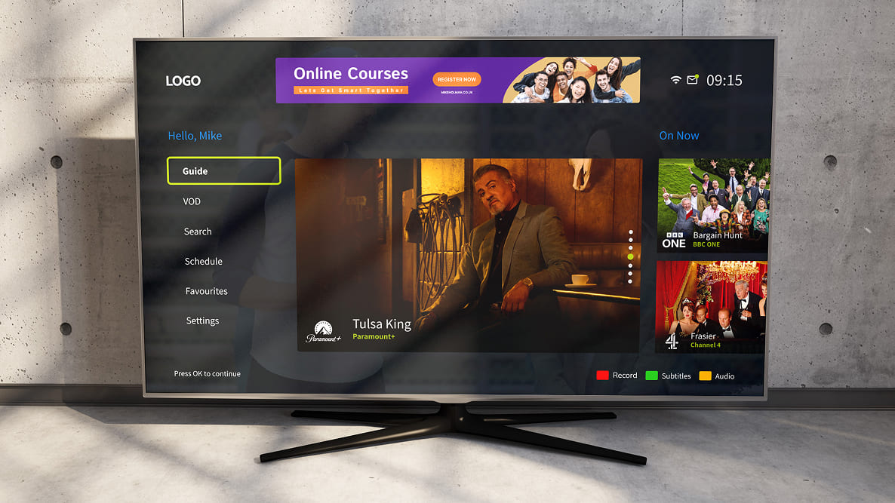

Content-First Design
Several concepts explored minimising chrome and allowing content to remain the primary focus.
Navigation and controls were layered over content rather than competing with it.
Television & Connected Devices
Throughout my career I have explored numerous interaction models for television and connected-device platforms.

Overview
Throughout my career I have explored numerous interaction models for television and connected-device platforms.
These concepts were created to investigate alternative approaches to content discovery, navigation, information density and remote-control interaction.
While not all concepts progressed into production products, they provided valuable opportunities to explore new ideas, challenge conventional UX patterns and influence future platform development.
The challenge
Designing for television introduces constraints not found in web and mobile products.
Viewers interact using:
The challenge is balancing discoverability, content density and simplicity while keeping the experience intuitive.
Exploration Themes
Several concepts explored minimising chrome and allowing content to remain the primary focus.
Navigation and controls were layered over content rather than competing with it.
Design concepts investigated how menus could appear over live television while maintaining awareness of the currently playing programme.
Rather than exposing all available options immediately, interfaces revealed additional content only when required.
Alternative content browsing models explored horizontal and vertical navigation patterns.
These concepts examined how viewers could browse large content libraries with minimal effort.
Experiments investigated layered panel systems where additional navigation levels appeared progressively as users moved deeper into the hierarchy.
This approach eventually influenced later production platforms.
Featured Explorations
A content-first interface where transparent menus appeared directly over live television.
The design used a limited colour palette and focused on minimising distraction while maintaining access to navigation and controls.
A grid-based discovery experience focused on promotional content and horizontal browsing.
The concept explored how content hierarchy could be surfaced through layout rather than traditional menu structures.
A panel-driven navigation system combining live television with layered menu structures.
The experience investigated how focus and hierarchy could be presented while preserving visibility of the underlying content.
A collection of concepts examining how familiar digital services could be adapted for television environments.
Examples included:
These projects explored information hierarchy, remote-control navigation and television-friendly interaction patterns.
Key Learnings
Design patterns that work on desktop and mobile often require significant adaptation before they become effective on television.
Understanding where focus lives and how it moves is one of the most important challenges in television UX.
Users interact with television products differently from traditional computing devices.
Reducing complexity generally improves usability.
The most successful concepts prioritised content while keeping navigation accessible but unobtrusive.
Gallery